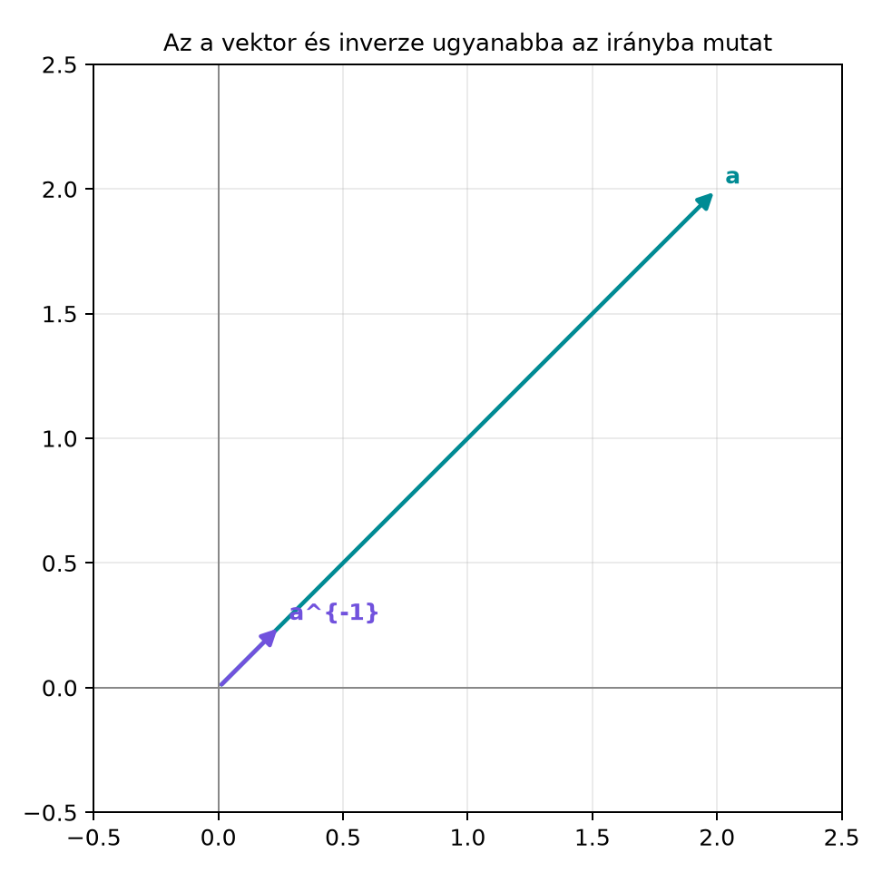

A valós számoknál az osztás az inverzzel való szorzást jelenti: a
hányados az a szám, amellyel az
-öt
megszorozva
-et
kapunk. A vektoroknál eddig tudtunk összeadni, kivonni, skalárral
szorozni, skaláris szorzatot és a geometriai szorzatot képezni, de
osztani nem. Kézenfekvő kérdés: van-e értelme annak, hogy egy vektort
elosztunk egy másikkal? Például ha egy ismeretlen
vektorra teljesül
akkor hogyan fejezhetjük ki
-et?
A geometriai szorzat asszociativitása lehetővé teszi, hogy erre az
egyenletre úgy tekintsünk, mint a számoknál megszokott
egyenletre: ha találunk egy olyan elemet, amellyel
-t
megszorozva
-et
kapunk, akkor azzal az egyenletet megoldhatjuk. Ebben az alfejezetben
bevezetjük a vektor inverzét, és megmutatjuk, hogy a geometriai szorzat
természetes módon ad erre lehetőséget.
5.1.2 Szemléletes kép: ugyanaz az
irány, reciprok hossz
Az inverz legegyszerűbb képe az, hogy egy vektor inverze ugyanabba az
irányba mutat, mint az eredeti vektor, de a hossza a hossz reciproka. Ha
,
akkor a hossza
,
az inverze pedig ugyanebbe az irányba mutat, de a hossza
.
Az alábbi ábra ezt szemlélteti.

Az a vektor és inverze ugyanabba az
irányba mutat - A példában a = 2e1 + 2e2, hossza √8; inverze a/8 =
0,25e1 + 0,25e2, hossza 1/√8.
5.1.3 Definíció: vektor
inverze
Definíció. Legyen
nemnulla vektor a
síkgeometriai algebrában. A
multivektort az
vektor inverzének nevezzük, ha
ahol
a skalár egységelem. Az inverz jele
.
A definícióból rögtön kitűnik, hogy az inverznek kétoldalinak kell
lennie: ugyanannak a
elemnek balról és jobbról szorozva is
-et
kell adnia. A geometriai szorzat asszociatív, ezért ha egy elem bal- és
jobbinverz is, akkor a kettő megegyezik.
Mivel bármely vektor önmagával vett külső szorzata nulla
(),
ezért
Az eredmény egy nemnegatív skalár, hiszen
esetén
.
Jelöljük ezt a skalárt
-tel:
Mivel
skalár, van közönséges valós inverze, éspedig
.
Definiáljuk a
vektort. Ez valóban vektor, mert egy vektort szoroztunk egy
skalárral. Ellenőrizzük a kétoldali inverztulajdonságot:
és a másik irányból:
Tehát valóban
.
Ezzel megkaptuk a vektor inverzét.
A levezetés kulcsa az volt, hogy a geometriai szorzat
asszociativitása miatt a skalárral való szorzás kiemelhető, és az
szorzat tisztán skalár. Ez az, ami a vektorok osztását lehetővé
teszi.
5.1.5 Bal- és jobboldali
osztás
Mivel a geometriai szorzat vektorokra nem kommutatív (például
),
az osztásnak két iránya van.
Jobboldali osztás: a
hányadoson azt a
multivektort értjük, amelyre
.
Ez a
elem, hiszen
Baloldali osztás: az
hányadoson azt a
elemet értjük, amelyre
.
Ez a
elem, mert
A két hányados általában különbözik. Például az
,
esetben
míg
A sorrend tehát valóban számít, és ezt a későbbiekben minden
egyenletmegoldásnál figyelembe kell venni.
5.1.6 A hányados mint
forgatva-nyújtó operátor
A jobboldali osztás eredményét vizsgáljuk meg közelebbről: legyen
és
.
Az
inverze
így a hányados
Ez az eredmény nem vektor, hanem bivektor. Ha ezzel a hányadossal
jobbról szorozzuk
-t,
visszakapjuk
-t:
Mivel
,
ezért
A hányados tehát egy olyan elem, amely az
vektort egy nyújtva-forgatással
-be
viszi. Általában, ha
és
nem párhuzamos, a
hányados egy skalár és egy bivektor összege, azaz egy páros fokú elem.
Ez a páros elem a síkon forgatást és nyújtást együtt kódol; ennek teljes
kifejtését a Forgatás a síkban alfejezetben
végezzük el, ahol a hányadost rotor alakban írjuk fel.
Továbbvitt eredmény. Az itt levezetett
összefüggést használjuk a Vetítés és
visszautasítás alfejezetben, ahol a vetítő operátort
alakban írjuk fel. A
hányados forgatva-nyújtó értelmezését pedig a Forgatás a síkban és a Rotor
két vektorpárból alfejezetben fejlesztjük tovább.
5.1.7 Nulla hosszúságú vektor
A levezetésben kihasználtuk, hogy
.
Mi a helyzet akkor, ha
,
de
?
A sík euklideszi geometriájában ilyen vektor nincs, mert minden nemnulla
vektor hossza pozitív. Később azonban, a téridő-algebrában, találkozunk
majd olyan nemnulla vektorokkal, amelyekre
;
ezeket fényszerű (null) vektoroknak nevezzük. Az ilyen vektoroknak nincs
inverzük: ha lenne
elem, amelyre
,
akkor
adódna, ami ellentmond annak, hogy
.
Ez az egyszerű gondolatmenet már most előre jelzi, hogy a null vektorok
speciális szerepet játszanak a geometriai algebrában.
5.1.8 Kidolgozott példa
Példa. Legyen
.
Számítsuk ki
-et,
és ellenőrizzük a szorzatot.
Először
.
Ezért
Ellenőrizzük a geometriai szorzatot:
Bontsuk ki a szorzatot tagonként:
Használjuk a bázisvektorok szorzótábláját:
,
,
.
Így
A másik irányú szorzat,
,
ugyanígy
-et
ad, mert a skalárrész ugyanaz marad, és a bivektoros tagok most is
kiejtik egymást.
Példa egyenletmegoldásra. Oldjuk meg az
egyenletet, ahol
és
.
Az
inverze
,
ezért balról szorozva
-gyel:
Az eredmény egy multivektor, nem tiszta vektor. Ellenőrzésképpen
szorozzuk vissza:
Az egyenlet megoldása tehát helyes. Figyeljük meg, hogy az ismeretlen
nem feltétlenül vektor, hanem általában multivektor; ezt a jelenséget a
geometriai szorzat teszi lehetővé.
5.1.9 Állítás egyenlet
megoldhatóságáról
Tétel. Ha
nemnulla vektor, akkor az
egyenletnek pontosan egy megoldása van, mégpedig
Bizonyítás. Először megmutatjuk, hogy a megadott
valóban megoldás:
Az asszociativitást és az inverz definícióját használtuk. Most tegyük
fel, hogy
és
is megoldás, azaz
Kivonva a két egyenletet:
.
Balról szorozva
-gyel:
Az asszociativitás miatt a bal oldal
,
tehát
azaz
.
Ezzel a megoldás egyértelmű. ∎
5.1.10 Python-ellenőrzés a mini
könyvtárral
A ga2.py modul MV2 osztályához tartozó
inverse() metódussal ellenőrizzük a fenti számításokat.
from ga2 import MV2, vec2# a = 2 e1 + 2 e2a = vec2(2, 2)a_inv = a.inverse()print("a =", a)print("a^-1 =", a_inv)print("a * a^-1 =", a * a_inv)print("a^-1 * a =", a_inv * a)# jobboldali osztás: b / a = b * a^-1b = vec2(0, 3)q = b * a_invprint("b / a =", q)print("(b / a) * a =", q * a)
Várt kimenet (a megjelenítés a ga2 modul
__repr__-jétől függ; a számértékek pontosak):
a = 2.0 e1 + 2.0 e2
a^-1 = 0.25 e1 + 0.25 e2
a * a^-1 = 1.0
a^-1 * a = 1.0
b / a = 0.75 - 0.75 e12
(b / a) * a = 3.0 e2
A kód megerősíti, hogy
,
és hogy a
hányados balról szorozva
-t
valóban
-t
adja.
5.1.11 Tipikus hibák és
félreértések
A sorrend felcserélése. A legyakoribb hiba az,
hogy valaki
helyett
-t
ír, vagy fordítva. A két kifejezés nem ugyanaz, mert a geometriai
szorzat nem kommutatív. Mindig gondoljuk végig, hogy az egyenletben
melyik oldalon kell szorozni az inverzzel.
Azt hinni, hogy az inverz csak egy skalár. Az
vektor, nem skalár; az iránya megegyezik
irányával, a hossza pedig
.
Az
képletben a
skalár, de az
-val
való szorzás vektort eredményez.
Nulla hosszúságú vektor inverzét keresni. Az
esetben nincs inverz, mert a levezetésben nullával osztanánk. Ez a hiba
különösen akkor jelentkezik, ha valaki később a téridő-algebrában
fényszerű vektorokra próbálja alkalmazni ugyanezt a képletet.
A hányadost automatikusan vektornak gondolni. Az
egyenlet megoldása általában nem vektor, hanem multivektor. A példában
az
eredmény skalár és bivektor összege; ez nem hiba, hanem a geometriai
algebra természetes következménye.
5.1.12 Feladatok
5.1.12.1 1. Fogalmi kérdés
Miért nincs inverze a nullvektornak, és miért nem elég a skaláris
szorzat az osztás definiálásához?
5.1.12.2 2. Kézi számolás
Számítsd ki az
vektor inverzét, és ellenőrizd, hogy
.
5.1.12.3 3. Levezetési feladat
Mutasd meg, hogy ha
és
párhuzamos vektorok, akkor a
hányados skalár, és éppen a hosszuk előjeles arányával egyenlő.
5.1.12.4 4. Alkalmazási /
Python-feladat
Oldd meg az
egyenletet, ahol
és
.
Írj Python-kódot, amely kiszámítja
-et
az inverse() metódus segítségével, és ellenőrzi, hogy
valóban
-t
ad. Magyarázd meg, miért nem vektor az eredmény.
5.1.13 Megoldások
5.1.13.1 1. Fogalmi kérdés
A nullvektorra
,
ezért a levezetésben szereplő
kifejezésben nullával kellene osztani. Ha pedig mégis lenne
elem, amelyre
,
akkor
és
egyszerre teljesülne, ami csak
esetén lehetséges. A skaláris szorzat önmagában nem elég, mert az két
vektorból skalárt ad, és nem rendelkezik olyan algebrai struktúrával,
amelyben az osztás inverz-szorzásként értelmezhető lenne; ehhez
asszociatív szorzás kell, amit a geometriai szorzat biztosít.
5.1.13.2 2. Kézi számolás
Az
hossznégyzete:
Ezért
Ellenőrzés:
A másik irányú szorzat is
-et
ad.
5.1.13.3 3. Levezetési feladat
Ha
és
párhuzamos, akkor létezik olyan
valós szám, hogy
.
Ekkor
A
előjeles arány éppen a hosszok arányát adja: ha
azonos irányú, akkor
,
ha ellentétes, akkor
.
Az eredmény tehát skalár.
5.1.13.4 4. Alkalmazási /
Python-feladat
Az egyenlet
,
ahol
,
.
Az
inverze
,
így
Python-kód:
from ga2 import MV2, vec2a = vec2(2, 0)b = vec2(1, 1)x = a.inverse() * bprint("x =", x)print("a * x =", a * x)
Várt kimenet:
x = 0.5 + 0.5 e12
a * x = 1.0 e1 + 1.0 e2
Az eredmény azért nem vektor, mert a geometriai szorzat egy vektor és
egy vektor szorzatában skalár és bivektor részt is ad; az egyenlet
megoldásakor ez a páros elem jelenik meg. Ez nem hiba, hanem annak a
jele, hogy az algebra zárt a multivektorokra.
5.1.14 Rövid összefoglaló
Ebben az alfejezetben bevezettük a vektor inverzét. Mivel minden
nemnulla vektorra
,
az
vektor teljesíti a
feltételt. Az inverz segítségével értelmeztük a vektorral való osztást:
a jobboldali hányados
,
a baloldali hányados
,
és a kettő a nemkommutativitás miatt általában különbözik. A
hányados egy forgatva-nyújtó operátort ad, amely
-t
-be
viszi; ez a gondolat a Forgatás a síkban
alfejezetben teljesedik ki. A nulla hosszúságú vektoroknak nincs
inverzük, ami előre utal a téridő-algebra fényszerű vektoraira. Az
képletet közvetlenül használjuk a Vetítés és
visszautasítás alfejezetben, a
hányadost pedig a Rotor két vektorpárból
alfejezetben is.